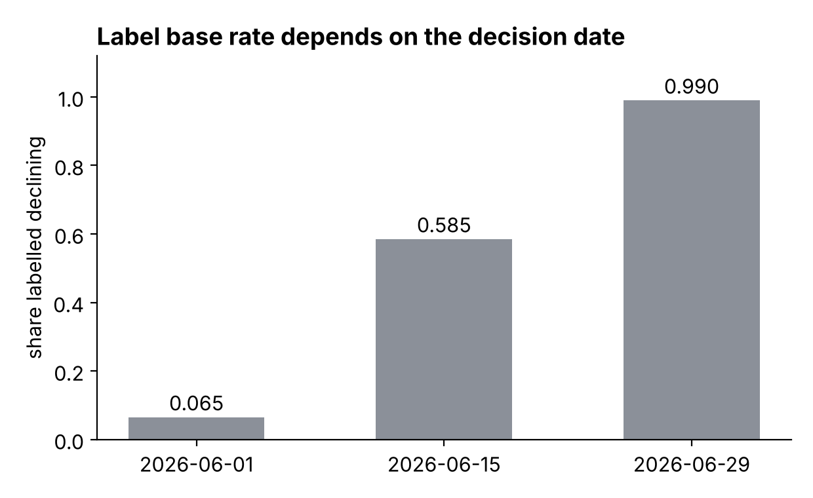
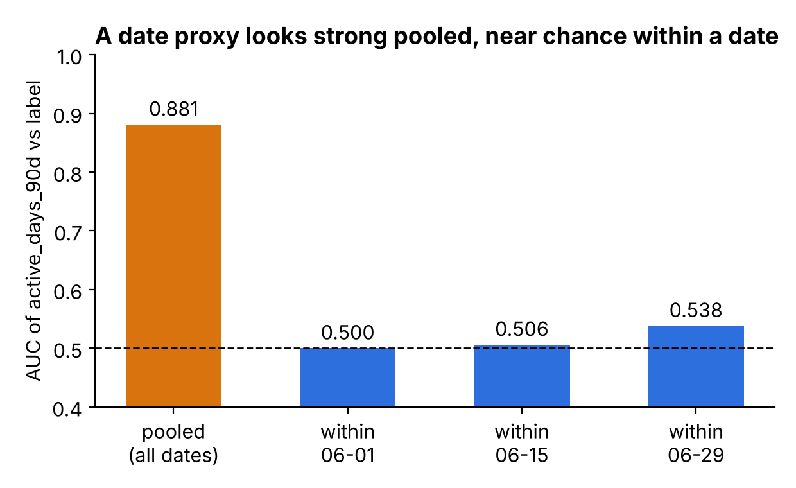
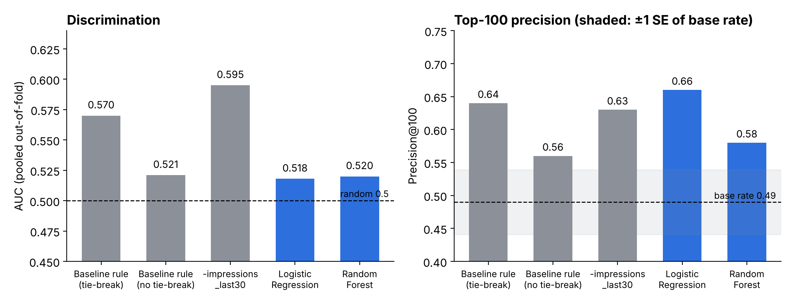
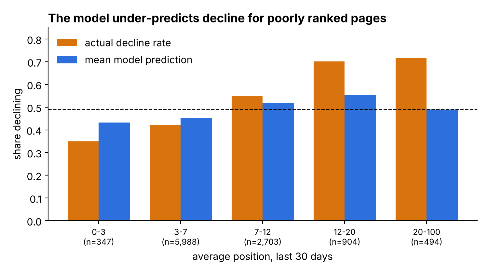
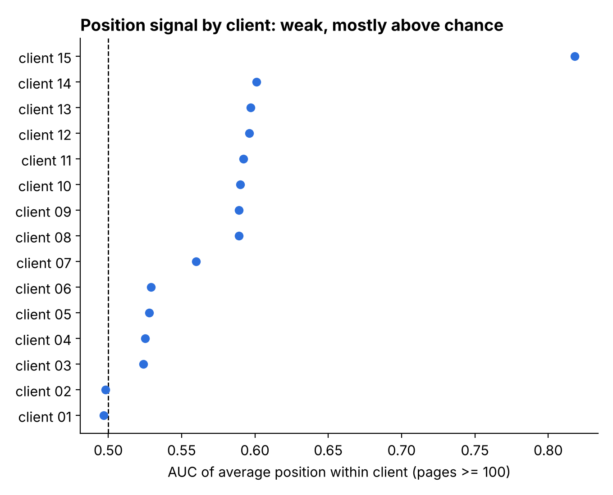

Capstone Report — Refresh / Content Opportunity Scoring
1. Problem framing
Decision supported. Which pages a content/SEO reviewer opens first. FlyRank clients have far more indexed pages than review hours, so the real question is "which handful is worth the next hour?", not "is this page bad?".
Unit of analysis. One row = one page (client_hash_id, content_hash_id) at one as-of date. Features look back from the as-of date. The label looks forward 30 days.
Output. A ranked review queue: priority score, suggested action (refresh / expand / protect / prune / monitor), and reason codes a human can sanity-check. A person stays in the loop for every page.
Cost of a wrong call.
- False positive: a reviewer spends 15–30 minutes on a page that was fine. This is annoying and burns scarce reviewer time, but it is not dangerous.
- False negative: a genuinely declining, high-demand page never surfaces and keeps losing clicks unnoticed.
- The queue is capacity-limited (a reviewer works the top 20–100), so precision at the top of the list matters more than overall accuracy. AUC is reported as the honest discrimination number.
2. Data safety
Data used. FlyRank warehouse release: dim_content (519,606 rows, one per client × content item), dim_clients, and fact_content_daily_performance_sample (11.7M rows, 2026-06-01 to 2026-06-30). The full daily fact table (78.8M rows, 70 clients, 2025-01-27 to 2026-06-30) was profiled for the data contract but not used for the modelling features.
Feature table. features.parquet: 156,778 rows × 50 columns, three as-of dates (2026-06-01, 06-15, 06-29).
Deliberately excluded (and why).
| Field | Why excluded |
|---|---|
trend_direction, trend_pct (starter CSV) | Label-derived, same-window. A model recovers the rule that made the label. |
clicks_future30, y_rate, is_declining | Label or future window. Used only to build the target. |
client_hash_id, content_hash_id, as_of_date | IDs and dates are for grouping and filtering only, never features. |
provider_used, model_used | Record decisions the content-generation system already made (post-decision information). |
last_optimized_date, content_updated_date, optimization_eligible_date, is_published, is_deleted | Current-state snapshots. Historical availability is not reconstructed. |
Leakage tests run (W03, W06).
- Future-window test: adding
clicks_future30on purpose pushed AUC to 0.999 (sampled run) and to 1.000 in the W06 harness. This confirms the harness detects leakage. - Split honesty: random vs client-grouped CV (Section 5).
- Date-proxy check: see below. This was the most important finding.
Date-proxy artifact (negative result). The first clean-looking model scored AUC about 0.92. Permutation importance showed one feature, active_days_90d, carrying nearly all of it (about 0.36 AUC drop, versus less than 0.01 for the next features). That column mostly encodes which as-of date a row comes from, and the label base rate depends on the date:
| as_of_date | rows | label base rate |
|---|---|---|
| 2026-06-01 | 17,992 | 0.065 |
| 2026-06-15 | 62,550 | 0.585 |
| 2026-06-29 | 76,236 | 0.990 |

The sample starts on 06-01, so the 06-01 row has almost no usable prior window and the 06-29 row has only one future day. active_days_90d has pooled AUC 0.881 but only 0.50–0.54 within a single date. Fix: model one as-of date (2026-06-15) with a rate-based label.

active_days_90d, pooled and within each decision date (W05 output).3. Baseline
Rule (W04). Score = number of flags fired:
| Flag | Condition |
|---|---|
| low visibility | impressions_last30 < 500 |
| impression decline | impressions_last30 / impressions_prev30 < 0.80 |
| stale | content_age_days_at_as_of ≥ 180 |
Ties are broken by lowest impressions. Reason codes: reason_low_visibility, reason_impression_decline, reason_stale.
Honest caveats about this baseline.
impressions_prev30is 100% missing at 2026-06-15 because the sample starts 06-01. Flag 2 therefore never fires, and the rule is effectively two flags.- The W04 top-50 are all score 2 with 1 impression and 1 click, so the queue is driven by ties. Several pages repeat across dates. The "confidence: High" note in the W04 top-20 review is boilerplate and should not be cited.
- A fair second baseline is the single feature
-impressions_last30. It is reported next to the rule in Section 5.
4. Model / analysis
Task type. Ranking/scoring. A binary classifier is trained and its predicted probability is the priority score. It is judged by AUC and precision@K, not accuracy.
Models. Random Forest (300 trees, min_samples_leaf=20, constant fill −1) and Logistic Regression (median impute + indicators, standard scaling). Seed = 0.
Target (one sentence). y_rate = 1 if average daily clicks over the 15 days after 2026-06-15 are below 0.70 × average daily clicks over the 15 days before it, restricted to pages with clicks_last30 ≥ 10 (n = 10,436).
Why the filter. Rate-based labels are mostly noise on pages with very few clicks.
Label sensitivity. Base rate is 0.386 at ratio 0.6, 0.490 at 0.7, and 0.578 at 0.8, so the label depends on the threshold.
Features (about 43–45).
- Search:
impressions_90d,impressions_last30,clicks_last30,ctr_last30,avg_position_last30,ga4_sessions_last30,active_days_90d - Content metadata:
search_volume,competition,cpc,backlinks,category_count,keyword_char_count,keyword_token_count,url_char_count,content_age_days_at_as_of - One-hot:
content_type,competition_level,main_intent(with explicit UNKNOWN categories) has_*missingness flags
Left out on purpose. Everything in the Section 2 table, plus all-NaN columns (impressions_prev30, clicks_prev30).
Known redundancy. At 2026-06-15, impressions_90d == impressions_last30 for more than 99% of rows (the sample only reaches back to 06-01). Several has_* flags duplicate each other. The effective feature set is a roughly 15-day window.
5. Evaluation
Split. One as-of date (2026-06-15), 5-fold GroupKFold by client_hash_id, fold assignments shared by every method. Pages from one client share traffic patterns, so a random split would let the model learn the client.
Why not time-aware. Only three as-of dates exist. 06-01 has no prior window and 06-29 has no future window. A time-aware split with an embargo needs the full daily table.
Models vs baselines, same rows and folds (pooled out-of-fold, base rate 0.49).

| Score | AUC | P@20 | P@50 | P@100 |
|---|---|---|---|---|
| Random (base rate) | 0.500 | 0.49 | 0.49 | 0.49 |
| Baseline rule (tie-break: low impressions) | 0.570 | 0.65 | 0.70 | 0.64 |
| Baseline rule (no tie-break) | 0.521 | 0.70 | 0.70 | 0.56 |
Single feature -impressions_last30 | 0.595 | 0.70 | 0.64 | 0.63 |
| Logistic Regression | 0.518 | 0.80 | 0.70 | 0.66 |
| Random Forest | 0.520 | 0.60 | 0.60 | 0.58 |
The standard error of P@100 at p ≈ 0.6 is about 0.049, so the P@K differences between rows are within noise. All methods beat the 0.49 base rate at the top of the list except the forest at P@50 and P@100, which is only a few points above it.
| Model | Fold 1 | Fold 2 | Fold 3 | Fold 4 | Fold 5 | Mean |
|---|---|---|---|---|---|---|
| Random Forest | 0.552 | 0.559 | 0.655 | 0.593 | 0.620 | 0.596 |
| Logistic Regression | 0.554 | 0.540 | 0.633 | 0.596 | 0.572 | 0.579 |
Per-fold AUCs are around 0.55–0.66, but pooled out-of-fold AUC is only 0.52. The score scale differs between folds, so pooling mixes folds that are individually informative. The honest summary is "weak discrimination, roughly 0.52–0.60 depending on how it is measured". The single feature -impressions_last30 (pooled AUC 0.595) is as good as or better than either model on this metric.
Error analysis (Random Forest, out-of-fold, 2026-06-15).
By clicks_last30 bucket:
| Bucket | n | actual decline | mean predicted | AUC |
|---|---|---|---|---|
| 10–20 | 6,148 | 0.524 | 0.505 | 0.512 |
| 20–50 | 3,187 | 0.468 | 0.456 | 0.494 |
| 50–200 | 1,006 | 0.365 | 0.395 | 0.387 |
| > 200 | 95 | 0.337 | 0.395 | 0.312 |
By avg_position_last30:
| Bucket | n | actual decline | mean predicted | AUC |
|---|---|---|---|---|
| 0–3 | 347 | 0.349 | 0.432 | 0.586 |
| 3–7 | 5,988 | 0.421 | 0.451 | 0.510 |
| 7–12 | 2,703 | 0.549 | 0.518 | 0.439 |
| 12–20 | 904 | 0.701 | 0.553 | 0.424 |
| 20–100 | 494 | 0.715 | 0.489 | 0.443 |

- The model is worse than chance inside the high-click buckets (AUC below 0.5), and inside the poor-position buckets it under-predicts decline (0.70 actual vs 0.55 predicted at positions 12–20).
- Confident misses were young pages (27–38 days old) with good positions (about 2.5–5.8) that still declined. Confident false alarms were pages around position 11–12 that held up.
- Mean-reversion check: inside the 50–200 and >200 click buckets, raw
clicks_last30has AUC 0.494 and 0.509 for the label, so there is no clear within-bucket signal either way.
6. Interpretation
What the model leans on. Permutation importance (held-out folds, AUC drop): avg_position_last30 0.034, impressions_last30 0.018, impressions_90d 0.017 (a near-duplicate of the previous column), ga4_sessions_last30 0.006, ctr_last30 0.005, url_char_count 0.004, keyword_token_count 0.003. Nothing else exceeds 0.001. Position is the one meaningful signal.
Position is the strongest simple signal, and part of it is a client effect.
- Pages with average position worse than 12: 1,398 pages with decline rate 0.706 vs base 0.49.
- Ranking by "worst position first" beats the forest at the top of the list: P@20 0.65 vs 0.60, P@100 0.73 vs 0.58, P@500 0.714 vs 0.526.
- One client supplies 15 of the top 20, 82 of the top 100 and 386 of the top 500 by this rule. That client's pages decline at a high rate overall (0.761 on 1,649 pages), its poorly ranked pages decline at 0.771, and its own position AUC is only 0.525.
- Excluding the two largest contributors (chosen by rule, not by hand), pages worse than position 12 still decline more: 397 pages at 0.713 vs a base of 0.464 for the remaining pages.
- Within clients that have at least 100 pages, position AUC is weak but mostly above chance: 13 of 15 clients above 0.5, 12 of them between 0.52 and 0.60, one outlier at 0.818, and two at about 0.50. Six of 15 are at or below 0.53.

Plain reading. Pages ranked poorly tend to decline more, and this holds beyond a single client, but within any one client position separates declining from stable pages only weakly. A pooled queue ranked on position will be dominated by whichever clients have many poorly ranked pages.
Surprises and negative results.
- Neither learned model reliably beat a one-feature rule under client-grouped CV.
- High-click pages are the hardest for the model, consistent with (but not proof of) regression to the mean.
- The apparent strength of
active_days_90dacross dates disappears within a date.
7. Recommendation
- Start from pages with average position worse than about 12 and at least 10 clicks in the last 30 days.
- Rank within each client so one large client does not fill the queue.
- Show reason codes (position band, impressions level, page age) and let the reviewer choose refresh / expand / protect / prune / monitor.
- Treat very high-click pages with caution. The model is weakest there.
Confidence: low to moderate. The lift over simple rules is small, measured on one decision date with about 15-day windows, on pages with at least 10 clicks.
Limits.
- Decision-support only. Nothing here says a refresh causes recovery, and nothing is claimed about Google's ranking algorithm.
- Valid only for the same data slice, window length and metrics. Re-validate if the content mix, client mix or objective changes.
- No automation. Low-confidence picks need manual review.
Next steps.
- Rebuild features from the full daily fact table for long history and many as-of dates.
- Add a time-aware split with an embargo.
- Add bootstrap intervals (resampling clients) to every headline number.
- Re-test the position rule against the best simple one-feature rule on that split.
8. Reproducibility
Order of notebooks. w03_data_contract → w03_feature_leakage_check (builds and caches features.parquet) → w04_baseline_score → w05_model.
Environment. Python 3.13.16, scikit-learn 1.6.1, pandas 2.2.3, plus duckdb, huggingface_hub, pyarrow, matplotlib.
Data credits. The warehouse is read through DuckDB from hf://datasets/FlyRank/internship-warehouse, i.e. the FlyRank Data Warehouse. Provide your token as a Colab Secret named HF_TOKEN (or the HF_TOKEN environment variable). Never paste it into a notebook.
Seeds. SEED = 0 everywhere (random_state=0, GroupKFold is deterministic, permutation importance random_state=0).
Key constants. LOOKBACK_DAYS=90, BASELINE_DAYS=30, FUTURE_DAYS=30, as-of date 2026-06-15, 15 past and 15 future days, ratio 0.7, MIN_CLICKS=10.
Re-run.
pip install duckdb huggingface_hub pyarrow scikit-learn==1.6.1 pandas==2.2.3 matplotlib
# set HF_TOKEN, then run the notebooks in the order above (Runtime -> Run all)